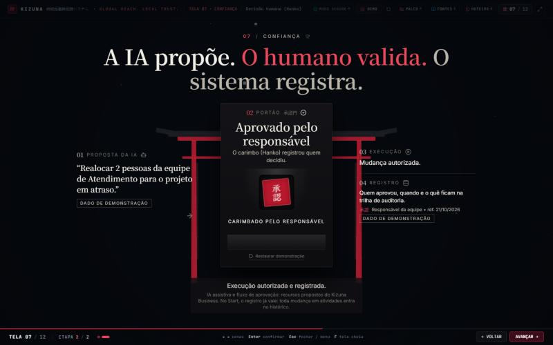
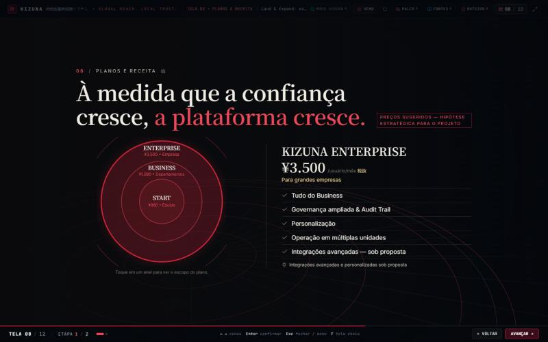
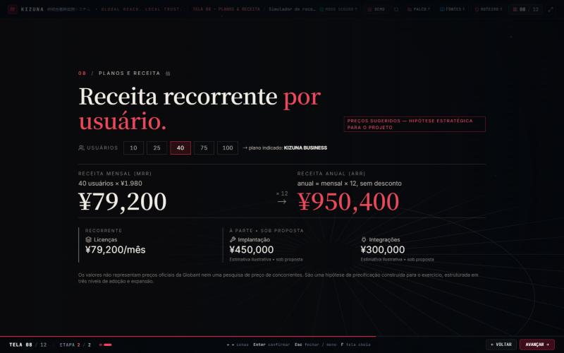
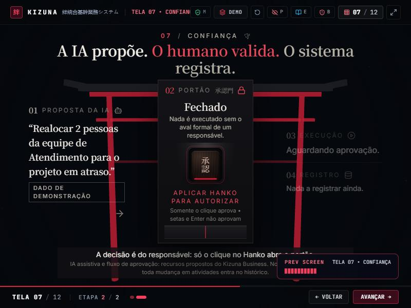
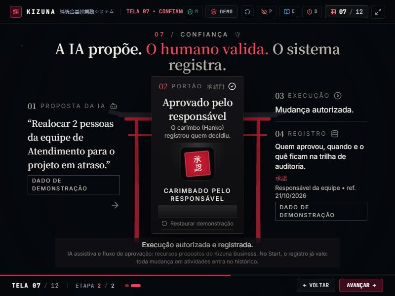

Telas 07 e 08 • antes e depois
Capturas em 1440 × 900, salvo indicação. "Antes" é a versão aprovada na rodada anterior. A sequência animada (clique no Hanko, abertura do portão, planos e conta da receita) está em sequencia.html.
07.1 A decisão está nas mãos do responsável


07.2 A decisão foi registrada


08.1 Planos


08.2 Receita


800 × 600 tela 07

